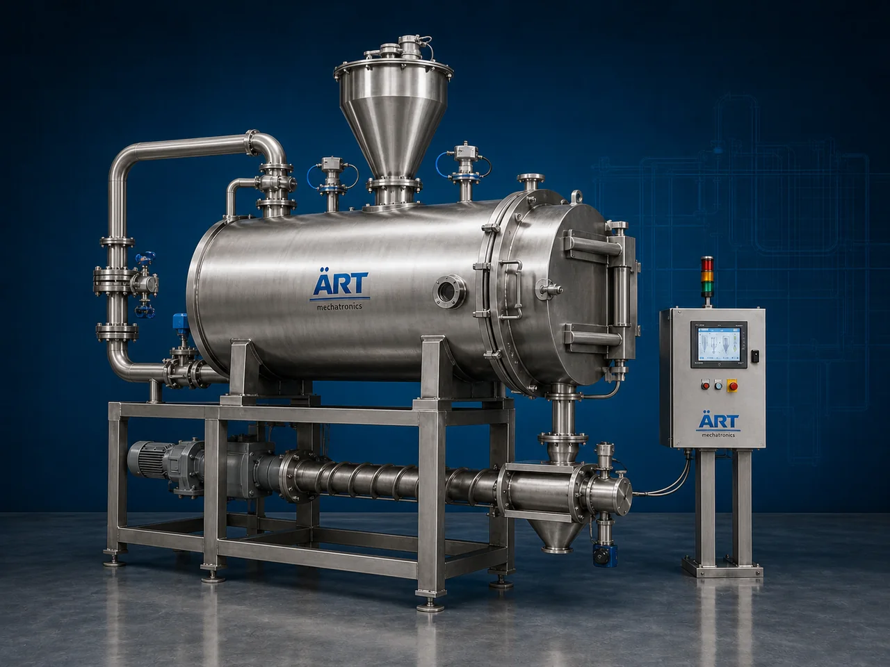

Skin Removal Machine (Industrial Peeling & Skin Separation System)
A Skin Removal Machine, also known as a Peeling Machine, Skin Separation Machine, Industrial Peeler, or Automatic Peeling System, is an advanced industrial food processing solution designed for peeling, skin removal, husk separation, outer layer removal, surface cleaning, polishing, and high-speed processing operations for vegetables, fruits, nuts, pulses, potatoes, garlic, onions, ginger, almonds, peanuts, tomatoes, and agro food products.

About the Skin Removal
Skin removal systems are widely used for:
- Potato peeling operations
- Garlic and onion skin removal
- Fruit peeling and cleaning
- Nut and pulse skin separation
- Tomato peeling operations
- Ginger and root vegetable cleaning
- Food ingredient preparation
- Agro material surface processing
The machine improves:
- Product cleanliness
- Processing efficiency
- Product consistency
- Labor reduction
- Food hygiene standards
- Surface finishing quality
- Industrial productivity
Industrial skin removal machines use:
- Abrasive peeling systems
- Brush and roller mechanisms
- Steam or dry peeling technology
- PLC and HMI automation controls
- Conveyor synchronized handling systems
to automatically remove skins, husks, and outer layers with superior accuracy and high production efficiency.
Skin removal machines are widely used in industries such as:
Food processing industries Vegetable processing industries Fruit processing industries Nut processing industries Pulse processing industries Frozen food industries Snack manufacturing industries Agro industries
where hygienic peeling, product cleaning, and continuous high-speed production are essential.
The machine is highly suitable for:
- Potato and root vegetable peeling
- Garlic and onion skin removal
- Almond and peanut skin separation
- Fruit peeling operations
- Tomato skin removal
- Industrial food automation systems
ART Mechatronics offers high-performance skin removal machines, engineered for continuous industrial operation, hygienic food processing, precision peeling performance, and reliable long-term industrial productivity.
Working Principle of Skin Removal Machine
- 1. Material Feeding & Loading Raw vegetables, fruits, nuts, or agro products are automatically fed into processing chamber for peeling operation.
- 2. Skin Separation & Peeling Process Machine automatically removes outer skin, husk, or surface layers using abrasion, brushes, rollers, steam, or airflow separation systems.
Intelligent synchronization ensures smooth product handling and accurate peeling operations.
- 3. Peeling & Cleaning Operation Machine handles processing of: ✔ Potatoes ✔ Garlic ✔ Onions ✔ Ginger ✔ Almonds ✔ Peanuts ✔ Tomatoes ✔ Agro food products
accurately and continuously.
- 4. Surface Cleaning & Material Separation Process Machine performs: Skin removal Peeling Surface cleaning Husk separation Outer layer removal Product polishing
for efficient industrial food processing operations.
- 5. Intelligent Automation & Hygiene Integration Optional systems include: Water spray systems Washdown compatible systems Food-grade stainless steel construction Automatic feeding systems Safety guarding systems
- 6. Finished Product Discharge Processed products discharged automatically for: Packaging operations Cooking systems Freezing operations Further processing Export shipment handling
Types of Skin Removal Machines
- 1. Potato Peeling Machine Designed for: ✔ Potato and root vegetable peeling applications
- 2. Garlic & Onion Skin Removal Machine Suitable for: ✔ Spice and food ingredient processing systems
- 3. Fruit Peeling Machine Uses: ✔ Fruit cleaning and peeling operations
- 4. Nut & Pulse Skin Separator Machine Designed for: ✔ Nut processing and pulse peeling systems
- 5. Servo Driven Skin Removal Machine Suitable for: ✔ Precision high-speed food processing operations
- 6. Fully Automatic Peeling System Designed for: ✔ Complete industrial food processing automation lines
Industries Using Skin Removal Machines
🍅 Food Processing Industry Vegetables, fruits, pulses, and industrial peeling systems. 🥔 Vegetable Processing Industry Potato peeling, onion cleaning, and root vegetable preparation systems. 🥜 Nut Processing Industry Almond skin removal, peanut peeling, and nut cleaning systems. ❄️ Frozen Food Industry Frozen vegetables, ready-to-cook foods, and food preparation systems. 🍓 Fruit Processing Industry Fruit cleaning, peeling, and pulp preparation operations. 🛒 FMCG Food Industry Food ingredient preparation and industrial processing systems.
Features & Advantages
- High-speed automatic skin removal operation
- Accurate and reliable peeling systems
- Hygienic stainless steel industrial construction
- PLC and automation control systems
- Improves product cleanliness and processing consistency
- Reduces manual peeling dependency
- Supports multiple vegetables, fruits, nuts, and agro products
- Reliable long-term industrial performance
- Smooth integration with industrial food production lines
Technical Highlights
Machine Type: Skin removal machine Industrial peeling system Food skin separation machine Material Compatibility: Potatoes Garlic Onions Ginger Almonds Peanuts Fruits and vegetables Integration: Brush and roller systems Abrasion peeling systems Automatic feeding systems Washdown compatible systems Features: PLC control system Touchscreen HMI Stainless steel construction Water spray systems Continuous duty operation Applications: Skin removal Peeling Surface cleaning Husk separation Food preparation Vegetable processing Automation: Semi-automatic Fully automatic industrial systems
Turnkey Peeling Solutions
ART Mechatronics offers: Complete skin removal systems Automatic peeling solutions Industrial food cleaning systems Food conveyor integration systems Installation & commissioning After-sales service & AMC
Why Choose Art Mechatronics
Expertise in industrial food processing and automation systems Customized peeling solutions for multiple industries High-performance and hygienic separation technology Advanced PLC and automation systems Proven industrial food processing performance across sectors
Applications
Food Processing Plants Vegetable Processing Facilities Nut Processing Industries Frozen Food Manufacturing Units Fruit Processing Plants Industrial Food Processing Industries
Related Process Equipment machines
Get pricing & specs for the Skin Removal
Share the product, target capacity, current process and plant location. These details help our engineers discuss the right machine or line configuration.
One partner, from design to start-up
ART Mechatronics designs, manufactures, installs and commissions your Skin Removal solution with regional presence in India, UAE and Thailand.